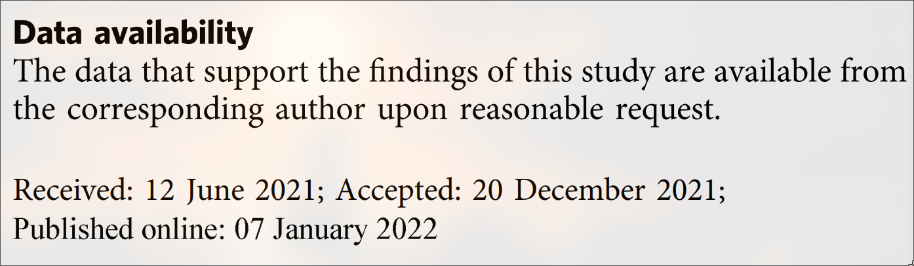
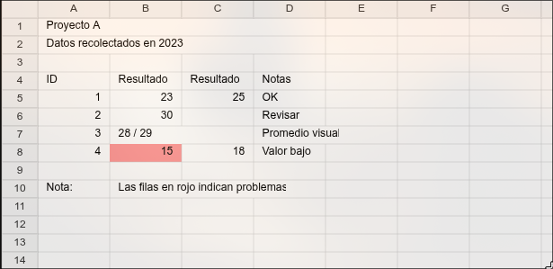
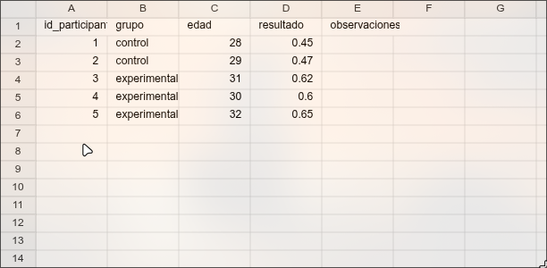

Diseño de protocolos, códigos y datos abiertos
Workshop Abre tu Ciencia
![]()
23 de enero de 2026
📲 Accede a las diapositivas en línea

Parte 1 · Marco y diagnóstico
1.1 Principios FAIR
| Principio | Qué significa | En la práctica |
|---|---|---|
| F – Findable | Los datos pueden localizarse fácilmente | Identificador persistente (DOI), metadatos claros, repositorios indexados |
| A – Accessible | Los datos se pueden descargar o consultar | Enlace funcional, permisos explícitos, acceso estable |
| I – Interoperable | Los datos pueden combinarse con otros | Formatos abiertos y legibles por máquina (CSV, JSON), vocabularios estándar |
| R – Reusable | Los datos pueden reutilizarse | Licencia clara (p. ej., CC-BY), documentación suficiente |
1.2 Principios FAIR: beneficios científicos y técnicos
Aumentan la reutilización y el impacto de los datos por humanos y máquinas (Wilkinson et al., 2016; Wise et al., 2019).
Mejoran la localización y el acceso a datos distribuidos, facilitando la colaboración (Tanhua et al., 2019).
Refuerzan la reproducibilidad y verificabilidad de los resultados científicos (Götz, 2023; Wilkinson et al., 2016).
Habilitan el uso eficiente de IA y aprendizaje automático con datos bien descritos (Wise et al., 2019; Olsen, 2023).
1.3 Principios FAIR: beneficios organizacionales y estratégicos
Apoyan una gestión ética y responsable de los datos, en combinación con CARE1 (Carroll et al., 2021).
Reducen tiempos y costes en la gestión y el análisis de datos (Martínez-García et al., 2023; Alharbi et al., 2023).
Favorecen la interoperabilidad entre dominios mediante estándares comunes (Tanhua et al., 2019; Krisnawijaya et al., 2025).
Sirven como marco estratégico para priorizar la FAIRificación y la preservación a largo plazo (Wilkinson et al., 2016).
1.4 La situación: Datos abiertos
1.5 La situación: Cumplimiento FAIR reciente por área
1.6 El problema real
El problema no es la “falta de apertura”, sino que muchos datos de investigación son:
Difíciles de localizar: repositorios dispersos, sin identificadores persistentes ni metadatos adecuados, lo que impide su localización por personas y máquinas (Wilkinson et al., 2016; Kinkade et al., 2021; Ugochukwu y Phillips, 2024).
Formalmente abiertos, pero poco accesibles: datos “públicos” en sitios opacos, con trámites lentos o formatos cerrados, que frenan la reutilización efectiva (Schwalbach et al., 2025; Pellen et al., 2025; Mesman et al., 2024).

1.6 El problema real
El problema no es la “falta de apertura”, sino que muchos datos de investigación son:
Poco interoperables: formatos, variables y terminologías idiosincráticas dificultan o impiden la comparación y combinación de estudios (Kush et al., 2020; Inau et al., 2022; Awadallah y Tammaro, 2025; Martin et al., 2022).
Difíciles o imposibles de reutilizar: documentación y metadatos pobres, sin información sobre calidad o contexto (Perrier et al., 2020; Mesman et al., 2024; Ugochukwu y Phillips, 2024).
1.6 El problema real
Además, gran parte del ecosistema de investigación está marcado por:
Incentivos mal alineados: la apertura se deja para el final, sin tiempo ni recursos, y compartir datos no se recompensa académicamente (Perrier et al., 2020; Tedersoo et al., 2021; Figueiredo, 2017).
Software y código frágiles: scripts no versionados, sin documentación ni empaquetado, que comprometen la descubribilidad, reproducibilidad y sostenibilidad (Barker et al., 2022).
Barreras legales y éticas confusas: incertidumbre sobre privacidad, propiedad intelectual y usos indebidos lleva a no compartir o a hacerlo de forma muy restrictiva (Schwalbach et al., 2025; Pellen et al., 2025; Figueiredo, 2017).
Parte 2 · Diseño y aplicación práctica
2.1 Lista de chequeo FAIR con ejemplos prácticos
2.1 Lista de chequeo FAIR con ejemplos prácticos
Ejemplo: estructura de proyecto FAIR
Referencias
Estructura y reproducibilidad: Wilson et al., 2016; Noble, 2009; Klein et al., 2018
Licencias y gobernanza del proyecto: Klein et al., 2018
Metadatos y datos (documentación, trazabilidad y preservación): Spreckelsen et al., 2020; Pacharra et al., 2025; Engstfeld et al., 2025; Wilkinson et al., 2016; Fouad et al., 2024
Código, resultados y protocolos reproducibles: Wilson et al., 2016; Noble, 2009; Visentin et al., 2024; Cunha-Oliveira et al., 2024; Kanza et al., 2022; Klein et al., 2018
2.1 Lista de chequeo FAIR con ejemplos prácticos
Ejemplo: convenciones para nombrar archivos
sub-001_session-01_task-rest_bold.nii.gzen vez definal2.nii
- nombres descriptivos y consistentes (Spreckelsen et al., 2020; Noble, 2009; Fouad et al., 2024)
- sin espacios ni caracteres especiales (Spreckelsen et al., 2020; Wörden et al., 2024; Fouad et al., 2024)
- fechas en formato ISO (YYYY-MM-DD)
- pocos niveles de carpetas (Spreckelsen et al., 2020; Wörden et al., 2024; Fouad et al., 2024)
2.1 Lista de chequeo FAIR con ejemplos prácticos
2.1 Lista de chequeo FAIR con ejemplos prácticos
- Descripción y propósito del proyecto → Qué hace y qué problema resuelve.
Muchos READMEs explican el qué y el cómo, pero omiten el propósito y el estado del proyecto (Prana et al., 2019) - Instalación y primer uso → Pasos claros de instalación + ejemplo mínimo funcional.
READMEs con instrucciones de instalación y uso se asocian con proyectos más populares (Liu et al., 2022). - Estructura del repositorio y enlaces clave → Mapa básico de carpetas/archivos importantes y enlaces a documentación externa.
Incluir fragmentos de código y enlaces a recursos visuales se relaciona con más visibilidad (Liu et al., 2022). - Estado, mantenimiento y licencia → Indicar licencia y si el proyecto está activo.
La información de licencia es uno de los contenidos más frecuentes y valorados en software (Ikeda et al., 2018). - Cómo contribuir o pedir ayuda → Pautas mínimas para contribuciones y canales de soporte (issues, email, foro).
Directrices de contribución y referencias se asocian con mayor popularidad del proyecto (Venigalla et al., 2022).
2.1 Lista de chequeo FAIR con ejemplos prácticos
2.1 Lista de chequeo FAIR con ejemplos prácticos
2.1 Lista de chequeo FAIR con ejemplos prácticos
2.1 Lista de chequeo FAIR con ejemplos prácticos
Excel vs CSV
Excel permite:
- Celdas fusionadas
- Múltiples encabezados
- Formato visual
- Ambigüedad estructural

2.1 Lista de chequeo FAIR con ejemplos prácticos
Excel vs CSV
Excel permite:
- Celdas fusionadas
- Múltiples encabezados
- Formato visual
- Ambigüedad estructural
CSV es:
- Formato abierto
- Sin elementos visuales
- Estructura tabular explícita
- Previene errores antes de que ocurran
2.1 Lista de chequeo FAIR con ejemplos prácticos
Excel vs CSV
CSV es:
- Formato abierto
- Sin elementos visuales
- Estructura tabular explícita
- Previene errores antes de que ocurran

2.1 Lista de chequeo FAIR con ejemplos prácticos
Excel vs CSV
CSV es:
- Estructura tabular explícita
- Una fila = una observación
- Una columna = una variable
- Sin notas mezcladas con los datos
2.1 Lista de chequeo FAIR con ejemplos prácticos
2.1 Lista de chequeo FAIR con ejemplos prácticos
2.2 Proc B como ejemplo
- Datos, código y README son evaluables
- Reproducibilidad computacional mínima
- Excepciones éticas explícitas
El rol del README
- Más importante que el archivo de datos
- Conecta:
- protocolo / datos / código
- Permite reutilización real
Reproducibilidad razonable
- El código corre
- Los datos cargan
- El flujo tiene sentido
2.3 Recomendaciones generales
Código y datos reproducibles
El código se abre para correrlo, no para leerlo
- Sin pasos manuales ocultos
- Rutas relativas
- Automatización mínima reproducible
Datos abiertos sin dañar
- Privacidad y consentimiento
- Poblaciones vulnerables
- Datos sensibles ≠ datos cerrados
(acceso y documentación importan)
Datos machine-readable
- Interpretables automáticamente
- Sin decisiones humanas implícitas
- Estructura clara:
- filas = observaciones
- columnas = variables
- filas = observaciones
- Formato abierto (e.g., CSV)
FAIR no es intuición personal
- Accessible ≠ “abre en mi computador”
- Interoperable ≠ “yo sé cómo leerlo”
- Reusable requiere:
- estructura
- documentación
- estructura
2.4 Ejemplos de repositorios FAIR
Este repositorio aplica lo que predica 😇 (de manera exagerada)
(https://github.com/JDLeongomez/protocolos_codigo_y_datos_abiertos)
- GitHub no asigna DOIs
- Zenodo / OSF permiten archivar versiones y asignar DOI
Otros ejemplos:
- Demo project FAIR-data (https://github.com/Deltares-research/FAIR-data-example-project)
- Demo project FAIR-data (https://github.com/maehr/open-research-data-template)
¡Gracias!
Juan David Leongómez PhD, MSc
jleongomez@unbosque.edu.co

Juan David Leongómez PhD, MSc